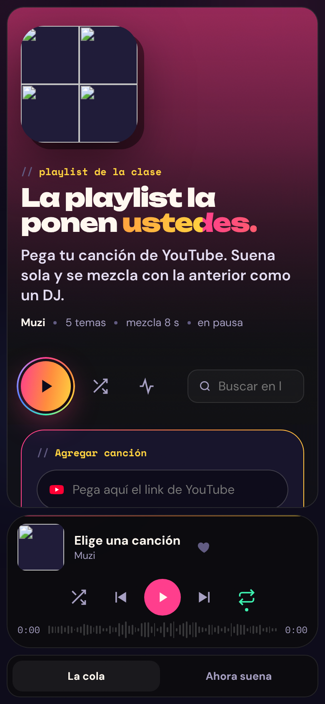

guía del producto
Qué es, cómo se usa en clase, todo lo que hace y lo que no puede hacer.
El alumno pega el link de YouTube (video, Short, YouTube Music o una playlist entera) y escribe su nombre.
Muzi lo pone en la cola con su nombre. Los demás pueden votar 🔥 para que suene antes.
El profe da play una vez. Muzi pasa de canción en canción solo, mezclando el final de una con el inicio de la otra.

Dos reproductores: mientras una canción baja, la siguiente sube. De 0 a 15 segundos.
Pega un link de lista de YouTube y entran hasta 100 canciones de golpe.
Con el filtro "Más votadas suenan primero", la cola se ordena por votos.
Marca favoritas y fíltralas.
Pantalla completa con la canción, quien la puso y un QR para pedir más.
Los alumnos escanean y te mandan su link por WhatsApp.
15, 30 o 45 minutos, o "al terminar la canción". Luego baja suave.
Copia la cola entera en un link y ábrela en otra compu.
Como en Spotify.
La app toma el color de la portada que suena.
Reordena la cola arrastrando las filas.
Se puede instalar como app en el celular o la compu.
atajos de teclado
| Espacio | Play / pausa |
| Shift + → | Mezclar ya a la siguiente |
| Shift + ← | Anterior |
| S | Aleatorio |
| L | Me gusta |
| P | Modo proyector |
| / | Buscar en la cola |
consejos para la clase
lo que Muzi no puede controlar
publicarlo gratis